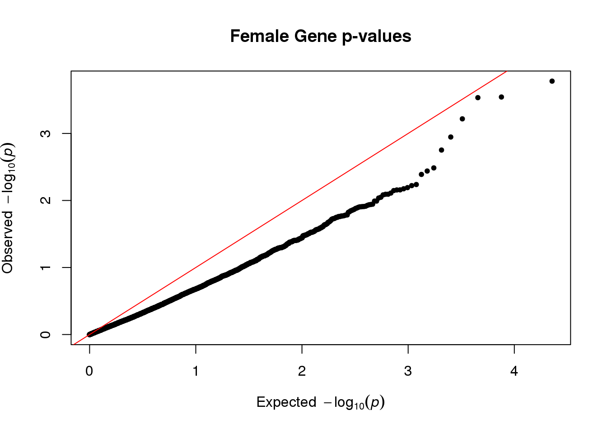
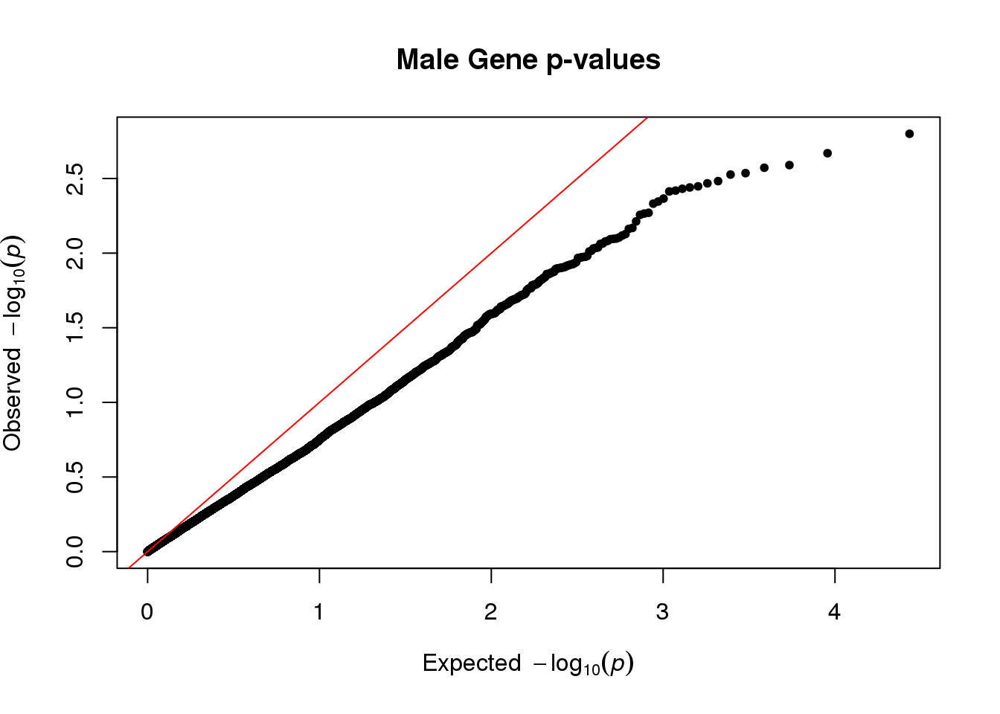

Last updated: 2023-01-08
Checks: 7 0
Knit directory: dgrp-starve/
This reproducible R Markdown analysis was created with workflowr (version 1.7.0). The Checks tab describes the reproducibility checks that were applied when the results were created. The Past versions tab lists the development history.
Great! Since the R Markdown file has been committed to the Git repository, you know the exact version of the code that produced these results.
Great job! The global environment was empty. Objects defined in the global environment can affect the analysis in your R Markdown file in unknown ways. For reproduciblity it’s best to always run the code in an empty environment.
The command set.seed(20221101) was run prior to running
the code in the R Markdown file. Setting a seed ensures that any results
that rely on randomness, e.g. subsampling or permutations, are
reproducible.
Great job! Recording the operating system, R version, and package versions is critical for reproducibility.
Nice! There were no cached chunks for this analysis, so you can be confident that you successfully produced the results during this run.
Great job! Using relative paths to the files within your workflowr project makes it easier to run your code on other machines.
Great! You are using Git for version control. Tracking code development and connecting the code version to the results is critical for reproducibility.
The results in this page were generated with repository version 951799a. See the Past versions tab to see a history of the changes made to the R Markdown and HTML files.
Note that you need to be careful to ensure that all relevant files for
the analysis have been committed to Git prior to generating the results
(you can use wflow_publish or
wflow_git_commit). workflowr only checks the R Markdown
file, but you know if there are other scripts or data files that it
depends on. Below is the status of the Git repository when the results
were generated:
Untracked files:
Untracked: code/aaaTest
Untracked: code/analysisSR.R
Untracked: code/geneGO.R
Untracked: code/multiPrep.R
Untracked: code/regress.81916.err
Untracked: code/regress.81916.out
Untracked: code/regress.81918.err
Untracked: code/regress.81918.out
Untracked: code/regress.R
Untracked: code/regress.sbatch
Untracked: code/regressF.81919.err
Untracked: code/regressF.81919.out
Untracked: code/regressF.R
Untracked: code/regressF.sbatch
Untracked: code/snpGene.77509.err
Untracked: code/snpGene.77509.out
Untracked: code/snpGene.77515.err
Untracked: code/snpGene.77515.out
Untracked: code/snpGene.sbatch
Untracked: data/eQTL_traits_females.csv
Untracked: data/eQTL_traits_males.csv
Untracked: data/fMeans.txt
Untracked: data/fRegress.txt
Untracked: data/goGroups.txt
Untracked: data/mMeans.txt
Untracked: data/mPart.txt
Untracked: data/mRegress.txt
Untracked: data/starve-f.txt
Untracked: data/starve-m.txt
Untracked: data/xp-f.txt
Untracked: data/xp-m.txt
Untracked: figure/
Untracked: scoreAnalysisMulticomp.R
Untracked: temp.Rmd
Unstaged changes:
Deleted: analysis/database.Rmd
Modified: code/baseScript-lineComp.R
Modified: code/fourLinePrep.R
Note that any generated files, e.g. HTML, png, CSS, etc., are not included in this status report because it is ok for generated content to have uncommitted changes.
These are the previous versions of the repository in which changes were
made to the R Markdown (analysis/multiReg.Rmd) and HTML
(docs/multiReg.html) files. If you’ve configured a remote
Git repository (see ?wflow_git_remote), click on the
hyperlinks in the table below to view the files as they were in that
past version.
| File | Version | Author | Date | Message |
|---|---|---|---|---|
| html | bb13ec2 | nklimko | 2022-12-21 | Build site. |
| Rmd | 4a73a00 | nklimko | 2022-12-21 | wflow_publish("analysis/multiReg.Rmd") |
| html | e9e8b44 | nklimko | 2022-12-21 | Build site. |
| Rmd | 30960d8 | nklimko | 2022-12-21 | wflow_publish("analysis/multiReg.Rmd") |
| html | e81425f | nklimko | 2022-12-21 | Build site. |
| Rmd | 7270330 | nklimko | 2022-12-21 | wflow_publish("analysis/multiReg.Rmd") |
| html | 497fd4e | nklimko | 2022-12-21 | Build site. |
| Rmd | 790533a | nklimko | 2022-12-21 | wflow_publish("analysis/multiReg.Rmd") |
| html | 177257f | nklimko | 2022-12-21 | Build site. |
| Rmd | 7b1c552 | nklimko | 2022-12-21 | wflow_publish("analysis/multiReg.Rmd") |
The lowest p-values were chosen to represent the fixed effect as better correlations assist in prediction of starvation resistance.
Random effect was a normal distribution with a mean of 1 and sd of 0.25. Default norm resulted in errors with negative value affecting matrix computations or creating singular matrices.
Additionally, I left verbose on TRUE to observe iteration steps as while randomness is seeded, iteration steps were not the same every time.
Depending on what is run, the system is not able to converge as it either goes to positive infinity and overflows to a negative value or reaches zero and “converges” at zero. If this webpage renders, then both runs will have converged on zero.
Note: data shown in this instance is wrong as highest p-values were chosen as the prediction almost always converged to zero, allowing compilation with workflowr
#read in p values
fReg <- fread("data/fRegress.txt")
#read in expression data
fMeans <- fread("data/fMeans.txt")
#create matrix of only gene expression, trims line and starvation
Y <- as.matrix(fMeans[,3:11340], row.names=1)
#dimensions and number of fixed effect genes
n <- dim(Y)[1]
p <- dim(Y)[2]
p_effect <- 260
#p_effect <- round(p / 15)
#400, 250 maxit
#keep
if(TRUE){
#error is seeded rnorm, number of rows(lines)
e <- rnorm(n, 1, 0.25)
#e <- rnorm(n)
# add gene names to p val list
geneNames <- colnames(fMeans)[3:11340]
fReg <- fReg[, gene:=geneNames]
###sorted p values
# LOW pval
pSort <- fReg[order(pvalList)]
#HIGH pval
#pSort <- fReg[order(-pvalList)]
}
#rerun
if(TRUE){
# fixed effect vector USELESS, must be matched to certain values
b <- c(rnorm(p_effect, mean=6), rep(0, p-p_effect))
#affix vector to sorted p values
pSort[,b:=b]
#restore sort order to id/alphabetical gene, matches expression data order
fFin <- pSort[order(id)]
# PROPER fixed effect vector PROPER with proper indexing
b <- fFin[,b]
#matrix multiplication of the data and p
y <- drop(Y%*%b) + e
###Create model for covariates to adjust for (only an intercept in our case)
mu <- rep(1, length(y))
names(mu) <- names(y)
###Compute transcriptomic relationship matrix (accounts for structure based on expression levels)
W <- scale(Y)
TRM <- tcrossprod(W)/ncol(W)
}
###Fit mixed model
fit <- greml(y = y, X = mu, GRM = list(TRM), verbose = TRUE, maxit = 100)[1] "Iteration:" "1" "Theta:" "55.73" "54.66"
[1] "Iteration:" "2" "Theta:" "112.48" "106.07"
[1] "Iteration:" "3" "Theta:" "228.94" "199.48"
[1] "Iteration:" "4" "Theta:" "473.32" "350.66"
[1] "Iteration:" "5" "Theta:" "1004.25" "526.12"
[1] "Iteration:" "6" "Theta:" "2204.95" "479.76"
[1] "Iteration:" "7" "Theta:" "4915.96" "0"
[1] "Iteration:" "8" "Theta:" "10576.46" "0"
[1] "Iteration:" "9" "Theta:" "24499.85" "0"
[1] "Iteration:" "10" "Theta:" "33377.59" "0"
[1] "Iteration:" "11" "Theta:" "64233.75" "0"
[1] "Iteration:" "12" "Theta:" "21974.94" "0"
[1] "Iteration:" "13" "Theta:" "54027.91" "0"
[1] "Iteration:" "14" "Theta:" "79643.02" "0"
[1] "Iteration:" "15" "Theta:" "0" "0"
[1] "Iteration:" "16" "Theta:" "0" "0"
[1] "Converged at Iteration:" "16"
[3] "Theta:" "0"
[5] "0" stat <- glma(fit = fit, W = W)
#qqplot
qq(stat[,4], main="Female Gene p-values")
rm(list=ls())
#read in p values
mReg <- fread("data/mRegress.txt")
#read in expression data
mMeans <- fread("data/mMeans.txt")
#create matrix of only gene expression, trims line and starvation
Y <- as.matrix(mMeans[,3:13577], row.names=1)
#dimensions and number of fixed effect genes
n <- dim(Y)[1]
p <- dim(Y)[2]
p_effect <- 525
#p_effect <- round(p / 15)
# add gene names to p val list
geneNames <- colnames(mMeans)[3:13577]
mReg <- mReg[, gene:=geneNames]
###sorted p values
# LOW pval
pSort <- mReg[order(pvalList)]
#HIGH pval
#pSort <- mReg[order(-pvalList)]
# fixed effect vector USELESS, must be matched to certain values
b <- c(rnorm(p_effect, mean=6), rep(0, p-p_effect))
#affix vector to sorted p values
pSort[,b:=b]
#restore sort order to id/alphabetical gene, matches expression data order
mFin <- pSort[order(id)]
# PROPER fixed effect vector PROPER with proper indexing
b <- mFin[,b]
#error is seeded rnorm, number of rows(lines)
e <- rnorm(n, 1, 0.25)
#e <- rnorm(n)
#matrix multiplication of the data and p
y <- drop(Y%*%b) + e
###Create model for covariates to adjust for (only an intercept in our case)
mu <- rep(1, length(y))
names(mu) <- names(y)
###Compute transcriptomic relationship matrix (accounts for structure based on expression levels)
W <- scale(Y)
TRM <- tcrossprod(W)/ncol(W)
###Fit mixed model
fit <- greml(y = y, X = mu, GRM = list(TRM), verbose = TRUE)[1] "Iteration:" "1" "Theta:" "91.15" "88.84"
[1] "Iteration:" "2" "Theta:" "183.8" "170.11"
[1] "Iteration:" "3" "Theta:" "373.54" "310.86"
[1] "Iteration:" "4" "Theta:" "769.98" "511.57"
[1] "Iteration:" "5" "Theta:" "1624.31" "637.37"
[1] "Iteration:" "6" "Theta:" "3520.08" "117.94"
[1] "Iteration:" "7" "Theta:" "7519.51" "0"
[1] "Iteration:" "8" "Theta:" "16410.1" "0"
[1] "Iteration:" "9" "Theta:" "31164.21" "0"
[1] "Iteration:" "10" "Theta:" "60969.74" "0"
[1] "Iteration:" "11" "Theta:" "8515.65" "0"
[1] "Iteration:" "12" "Theta:" "19284.7" "0"
[1] "Iteration:" "13" "Theta:" "47341.63" "0"
[1] "Iteration:" "14" "Theta:" "95237.84" "0"
[1] "Iteration:" "15" "Theta:" "45481.58" "0"
[1] "Iteration:" "16" "Theta:" "109238.51" "0"
[1] "Iteration:" "17" "Theta:" "208252.63" "0"
[1] "Iteration:" "18" "Theta:" "92623.61" "0"
[1] "Iteration:" "19" "Theta:" "0" "68299.02"
[1] "Iteration:" "20" "Theta:" "50566.26" "0"
[1] "Iteration:" "21" "Theta:" "63615.84" "0"
[1] "Iteration:" "22" "Theta:" "143982.95" "0"
[1] "Iteration:" "23" "Theta:" "145265.04" "0"
[1] "Iteration:" "24" "Theta:" "0" "5808.2"
[1] "Iteration:" "25" "Theta:" "365.69" "7491.58"
[1] "Iteration:" "26" "Theta:" "1580.34" "6062.89"
[1] "Iteration:" "27" "Theta:" "4522.6" "1158.62"
[1] "Iteration:" "28" "Theta:" "10692.21" "0"
[1] "Iteration:" "29" "Theta:" "24363.01" "0"
[1] "Iteration:" "30" "Theta:" "52929.41" "0"
[1] "Iteration:" "31" "Theta:" "0" "0"
[1] "Iteration:" "32" "Theta:" "0" "0"
[1] "Converged at Iteration:" "32"
[3] "Theta:" "0"
[5] "0" stat <- glma(fit = fit, W = W)
#qqplot
qq(stat[,4], main="Male Gene p-values")
sessionInfo()R version 4.0.3 (2020-10-10)
Platform: x86_64-pc-linux-gnu (64-bit)
Running under: CentOS Linux 7 (Core)
Matrix products: default
BLAS/LAPACK: /opt/ohpc/pub/Software/openblas_0.3.10/lib/libopenblas_haswellp-r0.3.10.dev.so
locale:
[1] LC_CTYPE=en_US.utf-8 LC_NUMERIC=C
[3] LC_TIME=en_US.utf-8 LC_COLLATE=en_US.utf-8
[5] LC_MONETARY=en_US.utf-8 LC_MESSAGES=en_US.utf-8
[7] LC_PAPER=en_US.utf-8 LC_NAME=C
[9] LC_ADDRESS=C LC_TELEPHONE=C
[11] LC_MEASUREMENT=en_US.utf-8 LC_IDENTIFICATION=C
attached base packages:
[1] stats graphics grDevices utils datasets methods base
other attached packages:
[1] qgg_1.1.1 qqman_0.1.8 cowplot_1.1.1 ggplot2_3.3.5
[5] data.table_1.14.2 dplyr_1.0.8 workflowr_1.7.0
loaded via a namespace (and not attached):
[1] Rcpp_1.0.8.3 lattice_0.20-45 getPass_0.2-2 ps_1.6.0
[5] assertthat_0.2.1 rprojroot_2.0.3 digest_0.6.29 utf8_1.2.2
[9] R6_2.5.1 MatrixModels_0.5-1 evaluate_0.15 coda_0.19-4
[13] highr_0.9 httr_1.4.2 pillar_1.7.0 rlang_1.0.4
[17] rstudioapi_0.13 SparseM_1.81 whisker_0.4 callr_3.7.0
[21] jquerylib_0.1.4 Matrix_1.5-3 rmarkdown_2.16 splines_4.0.3
[25] statmod_1.4.37 stringr_1.4.0 munsell_0.5.0 compiler_4.0.3
[29] httpuv_1.6.5 xfun_0.30 pkgconfig_2.0.3 mcmc_0.9-7
[33] htmltools_0.5.2 tidyselect_1.1.2 tibble_3.1.6 fansi_1.0.3
[37] calibrate_1.7.7 crayon_1.5.1 withr_2.5.0 later_1.3.0
[41] MASS_7.3-56 grid_4.0.3 jsonlite_1.8.0 gtable_0.3.0
[45] lifecycle_1.0.1 DBI_1.1.2 git2r_0.30.1 magrittr_2.0.3
[49] scales_1.2.0 cli_3.3.0 stringi_1.7.6 fs_1.5.2
[53] promises_1.2.0.1 bslib_0.3.1 ellipsis_0.3.2 generics_0.1.2
[57] vctrs_0.4.1 tools_4.0.3 glue_1.6.2 purrr_0.3.4
[61] parallel_4.0.3 processx_3.5.3 fastmap_1.1.0 survival_3.3-1
[65] yaml_2.3.5 colorspace_2.0-3 knitr_1.38 sass_0.4.1
[69] quantreg_5.94 MCMCpack_1.6-3